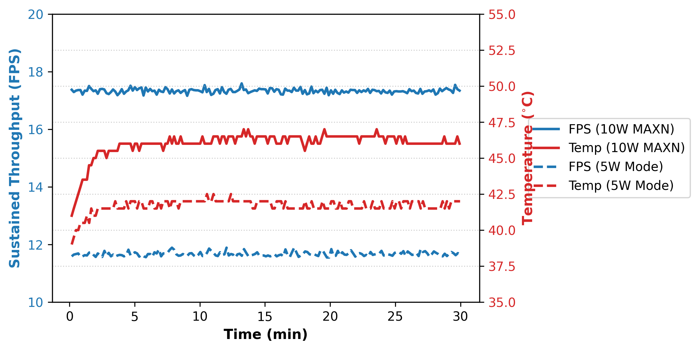

Edge Deployment (Jetson Nano)
To demonstrate the practical viability of LiteALPR in resource-constrained edge environments, we evaluated the framework on an NVIDIA Jetson Nano utilizing TensorRT post-training quantization.
Hardware & Software Specifications
To ensure exact reproducibility, the following specifications were used during our edge evaluation:
- Hardware: NVIDIA Jetson Nano Developer Kit
- CPU: Quad-core ARM Cortex-A57
- GPU: 128-core NVIDIA Maxwell
- Memory: 4 GB 64-bit LPDDR4 (25.6 GB/s bandwidth)
- Power Mode: 10W (MAXN) maximum performance mode
- Software Environment:
- OS: Ubuntu 18.04
- JetPack SDK: 4.6.1
- CUDA: 10.2
- cuDNN: 8.2
- TensorRT: 8.2.1
- Python: 3.6.9
Latency Breakdown
Benchmarking Methodology
Similar to the desktop evaluation, the Jetson Nano latency and throughput (mean ± std) were rigorously measured over 1,000 test images across 5 consecutive execution passes to ensure statistical reliability.
| Pipeline Component | Latency (ms) |
|---|---|
| Pre-processing | 6.59 ± 0.82 |
| Detection (YOLOv8n-Efficient FP16) | 20.66 ± 1.15 |
| Crop & Resize | 1.71 ± 0.45 |
| Recognition (SVTR26-Tiny INT8) | 21.77 ± 1.30 |
| Context-Switching | 6.73 ± 0.94 |
| Memcpy (H2D/D2H) | 0.23 ± 0.05 |
| Total End-to-End Latency | 57.69 ± 4.71 |
| Sustained Throughput (FPS) | 17.33 ± 1.45 |
To reproduce the Jetson Nano benchmark (17.33 FPS End-to-End), follow these steps:
Step 1: Export Models to ONNX
First, export the trained PyTorch models to ONNX format (this can be done on your host machine):
# Export Detection Model
python tools/export_det.py \
-m output/det/yolov8n_efficient/train/weights/best.pt \
--imgsz 416 \
--opset 12
# -> Expected output: output/det/yolov8n_efficient/train/weights/best_416.onnx
# Export Recognition Model
python tools/export_rec.py \
-m output/rec/svtr26_tiny/train/best.pth \
--save_path output/rec/svtr26_tiny/train/best.onnx \
--opset 12 \
--dynamic
# -> Expected output: output/rec/svtr26_tiny/train/best.onnx
Step 2: Build TensorRT Engines
Transfer the ONNX models to your Jetson Nano and use trtexec to build the optimized engines. We utilize FP16 precision for the detector and INT8 quantization for the recognizer to maximize throughput.
Note on INT8 Quantization: Applying INT8 quantization to SVTR26-Tiny drastically reduces latency (approx. 5× speedup compared to FP32's ~111.12 ms) while maintaining robust accuracy (89.28% sequence accuracy, 3.26% CER). The slight accuracy improvement suggests that INT8 calibration inherently acts as a regularization mechanism, suppressing high-frequency sensor noise. For detailed performance comparisons, refer to the Benchmarks page.
# Build YOLOv8n-Efficient Engine (FP16)
/usr/src/tensorrt/bin/trtexec --onnx=/path/to/your/models/best_416.onnx \
--saveEngine=yolov8n_efficient_416_fp16.engine \
--fp16 \
--workspace=2048
# Build SVTR26-Tiny Engine (INT8)
/usr/src/tensorrt/bin/trtexec --onnx=/path/to/your/models/best.onnx \
--saveEngine=svtr26_tiny_int8.engine \
--workspace=1024 \
--minShapes=input:1x3x32x32 \
--optShapes=input:1x3x64x64 \
--maxShapes=input:1x3x128x128 \
--int8
Step 3: Run Full Pipeline Benchmark
Finally, execute the provided Python benchmarking script directly on the Jetson Nano. This script precisely measures the end-to-end latency, including pre-processing, context-switching, and GPU memory transfers:
python test_performance/benchmark_latency_jetson_nano.py \
--images_dir /path/to/your/dataset/images \
--det_model_path /path/to/your/models/yolov8n_efficient_416_fp16.engine \
--rec_model_path /path/to/your/models/svtr26_tiny_int8.engine
Step 4: Pure C++ Inference Profiling (Optional)
In production, edge pipelines are often deployed entirely in C/C++ to eliminate Python overhead (such as the Global Interpreter Lock and context switching). To benchmark the pure theoretical latency of the standalone compiled engines, you can use the trtexec profiling tool:
# Profile Detection Engine (YOLOv8n-Efficient)
/usr/src/tensorrt/bin/trtexec \
--loadEngine=/path/to/your/models/yolov8n_efficient_416_fp16.engine \
--shapes=images:1x3x416x416 \
--iterations=1000 \
--avgRuns=100
# Profile Recognition Engine (SVTR26-Tiny)
/usr/src/tensorrt/bin/trtexec \
--loadEngine=/path/to/your/models/svtr26_tiny_int8.engine \
--shapes=input:1x3x32x128 \
--iterations=1000 \
--avgRuns=100
Step 5: System Resource Monitoring (Optional)
To monitor the system resource utilization (RAM, CPU, GPU, and Temperature) during inference, you can use the built-in tegrastats utility.
Open a new terminal on your Jetson Nano and run:
Whiletegrastats is running, execute the benchmark script from Step 3 in your primary terminal. You will be able to observe the real-time resource footprint as the models are loaded into VRAM and inference begins. Maintaining a low memory footprint is critical on edge devices. For instance, loading both YOLOv8n-Efficient FP16 and SVTR26-Tiny INT8 peaks at only ~2.55 GB, well within the 4 GB limit of the Jetson Nano:
| Execution Phase | RAM Utilization | CPU Utilization | GPU Utilization | Temperature |
|---|---|---|---|---|
| Idle | 1,467 MB | ~3% | 0% | 25.0°C |
| Initialization | 1,742 MB | ~26% | 99% | 25.0°C |
| Peak Inference | 2,554 MB | ~35% | 40–99% | 32.0°C |
| Cooldown | 1,467 MB | ~22% | 0% | 30.5°C |
Step 6: Power & Thermal Stress Testing (Optional)
To validate the deployment reliability for continuous 24/7 edge operation, we provide a stress testing script. This script runs the end-to-end pipeline continuously for a specified duration and logs the FPS, Latency, and Temperature every 10 seconds to a CSV file.
python test_performance/run_stress_test_jetson_nano.py \
--images_dir /path/to/your/dataset/images \
--det_model_path /path/to/your/models/yolov8n_efficient_416_fp16.engine \
--rec_model_path /path/to/your/models/svtr26_tiny_int8.engine \
--duration 30 \
--output_csv run_stress_test_results.csv
This will run the pipeline continuously for 30 minutes. As an example, our rigorous 30-minute stress test demonstrates exceptional thermal stability under different power configurations. Running in the maximum performance 10W (MAXN) mode, the system sustains a throughput of 17.33 FPS with a safe Always-On (AO) peak temperature of 47.0°C. In the low-power 5W mode, the system averages 11.67 FPS with a peak temperature of 42.5°C. In both scenarios, the system exhibited zero thermal throttling, ensuring reliable continuous traffic monitoring.
